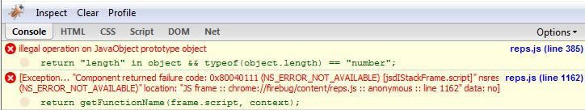

Reported by btelles, Yesterday (24 hours ago) ...
What steps will reproduce the problem?
1. Open a page with code:
2. Place a breakpoint at the last line (mod = new Mod('myGraph'))
3. Refresh the page with the breakpoint in place
What is the expected output? What do you see instead?
I should see no errors, however I see the following two errors:
illegal operation on JavaObject prototype object
[Break on this error] return "length" in object && typeof(object.length) ==
"number";
reps.js (line 385)
[Exception... "Component returned failure code: 0x80040111
(NS_ERROR_NOT_AVAILABLE) [jsdIStackFrame.script]" nsresult: "0x80040111
(NS_ERROR_NOT_AVAILABLE)" location: "JS frame ::
chrome://firebug/content/reps.js :: anonymous :: line 1162" data: no]
[Break on this error] return getFunctionName(frame.script, context);
reps.js (line 1162)
What version of the product are you using? On what operating system?
Firebug version: 1.03
Firefox: 2.0.0.3
OS's: (1)XP Pro and (2)Vista Business
Please provide any additional information below.
Is it possible there are conflicts with other extensions? (maybe the Aptana
extension?)
Comment #1 by btelles, Today (95 minutes ago)
Here's a picture of the error (it's probably easier to diagnose it with Firebug's
formatting)
